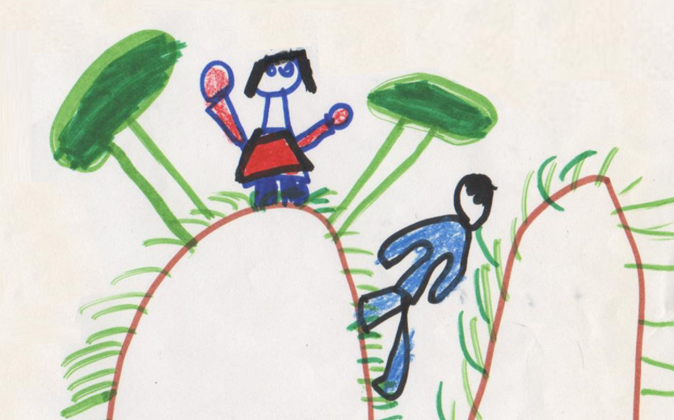

장애 유아를 위한 특수교육 과정의 필요성
장애 유아를 위한 교육과정의 필요성은 장애 유아가 일반적인 교육과정에서 배제되지 않고, 그들의 고유한 발달 요구를 충족시키기 위한 맞춤형 교육적 지원을 받기 위해서다. 장애 유아는 전형적으로 발달하는 유아와는 다른 학습 방식과 속도를 보이므로, 그에 맞는 교육 내용과 교수 방법이 필요하다. 이러한 필요성을 충족시키기 위해 교육과정은 '무엇을 가르칠 것인가(교수 내용)'와 '어떻게 가르칠 것인가(교수 방법)'를 명확히 제시해야 한다. 이는 단순히 지식 전달을 넘어, 유아의 자립 능력과 사회적 상호작용 기술을 길러주는 교육적 활동을 포함한다.

1. 차별화된 교육 활동
특히 장애 유아는 발달 과정에서 다양한 지원이 필요하므로, 이들에게 적합한 교육과정은 그들의 특성을 반영한 차별화된 교육 활동을 제공해야 한다. 예를 들어, 시각장애 유아는 촉각적 경험을 통해 학습하고, 청각장애 유아는 시각 자료를 통해 의사소통 기술을 발달시킬 수 있다. 이와 같은 특수성을 반영한 교육과정은 각 유아의 능력에 맞춘 개별적인 교육 계획을 필요로 한다.
2. 잠재력 발휘
장애 유아를 위한 교육과정은 유아가 중요한 기술과 지식을 습득할 수 있도록 체계적으로 설계된다. 이는 유아의 발달 단계에 맞춘 교육적 접근을 통해, 학습 기회를 최대화하고 잠재력을 발휘할 수 있도록 돕는 것이 목적이다. 특히 인지적, 사회적, 정서적 발달을 촉진시키고, 자립심을 기르는 활동을 포함한 교육 과정이 장애 유아에게 필요하다. 또한 언어 발달, 운동 능력, 사회성 발달과 같은 핵심 영역에 초점을 맞추어 유아의 전반적인 발달을 돕는다.
3. 일상생활 자립 활동
교육과정의 핵심은 장애 유아가 스스로 삶을 영위할 수 있는 자립 기술을 학습하는 데 있다. 이를 위해 일상생활 활동(Life Skills)을 가르치며, 이러한 기술들은 성인이 되어서도 독립적인 생활을 할 수 있도록 준비하는 과정이 된다. 예를 들어, 옷 입기, 식사, 화장실 사용 등 기본적인 자립 기술은 장애 유아가 생활에서 독립적인 주체로 자리 잡을 수 있도록 돕는 중요한 부분이다.
4. 가족과의 협력
장애 유아를 위한 교육과정은 또한 가족과의 협력을 통해 더욱 효과적으로 운영될 수 있다. 가족들은 유아의 발달을 가장 가까이에서 지켜보며 그들의 요구를 파악할 수 있는 중요한 자원이다. 따라서 가족의 참여와 협력이 유아의 교육과정에 통합되면, 유아의 발달을 더욱 촉진할 수 있다. 이를 위해 교육 기관과 가정 간의 소통이 활발하게 이루어져야 하며, 개별화된 교육 목표에 대해 가족과 교사가 협력하여 목표를 설정하고 달성해 나가는 과정이 필요하다.
결 론
장애 유아를 위한 교육과정은 그들의 발달적 요구를 충족시키기 위해 반드시 필요하다. 이 교육과정은 단순히 학문적인 지식 전달에 그치는 것이 아니라, 유아가 사회에서 독립적인 존재로 성장할 수 있도록 돕는 역할을 한다. 개개인에 알맞은 각 유아의 발달 속도와 특성을 반영한 맞춤형 교육과정을 통해, 장애 유아가 자립적인 삶을 살 수 있도록 지원하는 것이 궁극적인 목표이다.
따라서 장애 유아의 발달 수준에 맞춘 체계적이고 통합적인 교육과정이 가장 필요하며, 이를 통해 장애 유아가 자신의 잠재력을 최대한 발휘할 수 있도록 돕는 것이 매우 중요하다.
참고문헌:
서혜전 (2003). 장애유아를 위한 통합교육. 서울: 학지사.
윤정인 (2016). 특수유아교육의 이론과 실제. 서울: 양서원.
김진경 (2019). 장애유아의 발달과 교육과정. 서울: 교육과학사.
김은경 (2010). 특수유아를 위한 교육과정. 서울: 학지사.
서혜전 (2014). 발달적 관점에서 본 특수유아 교육. 서울: 교육과학사.
윤정인 (2019). 장애 유아의 교육과정 연구. 서울: 양서원.
2023.10.13 - [특수장애] - 지적장애 의의 및 정의 - 정서장애와 행동장애 동반 가능성
지적장애 의의 및 정의 - 정서장애와 행동장애 동반 가능성
지적장애의 의의 지지적장애는 개인의 지능 및 적응 행동 기능이 평균보다 현저히 낮아 일상생활에서 여러 문제를 경험하는 상태를 말한다. 적장애는 생물학적, 환경적 요인으로 인해 개발 초
think-sis.co.kr
2024.09.22 - [특수장애] - 장애 유아를 위한 교육 과정 -개별화 , 맞춤형의 통합적 지원
장애 유아를 위한 교육 과정 -개별화 , 맞춤형의 통합적 지원
장애 유아를 위한 교육과정 의의 장애 유아를 위한 교육과정은 발달적 요구를 충족시키기 위한 체계적이고 차별화된 교육적 접근을 제공하는 데 매우 중요한 역할을 한다. 일반 유아와 달리,
think-sis.co.kr